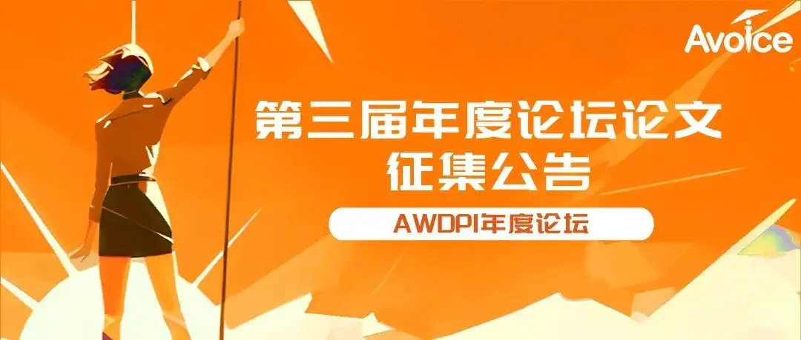
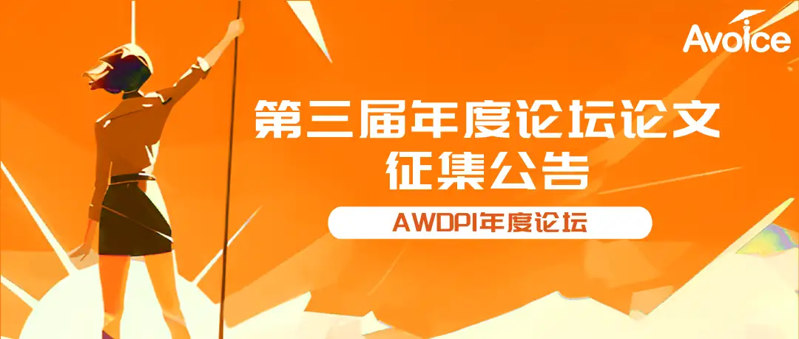
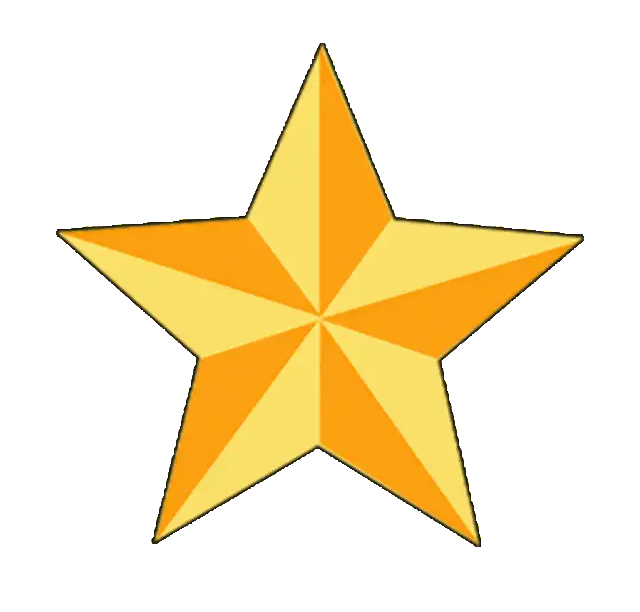
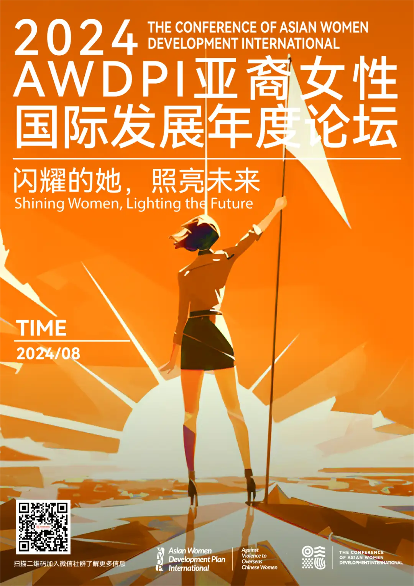

一 | AWDPI年度论坛

2024 AWDPI亚裔女性国际发展论坛即将启幕。本届论坛将围绕“Orange the World——共建无暴力的未来”“女性身份塑造济新纪元”两大主题，与世界各地关注亚裔女性发展的政府部门、学术机构、公益组织、专家学者、意见领袖和热心人士展开深度对话，呈现一场凝聚智慧、探索和热情的思想盛宴。
【论文评议】作为AWDPI亚裔女性国际发展论坛一直并保留的重要内容板块，将在过去两届的基础上进行拓展与创新，再次公开征集论文与研究投稿，并在论坛上进行公开展示。
关于2024AWDPI亚裔女性国际发展论坛的更多详细信息，请您对我们的公众号保持关注，我们将会陆续向您介绍精彩的论坛议程与令人期待的重量级嘉宾！

二 | 论文与研究招募
三 | 论坛与论文评议观众参与途径
本次论坛的所有环节都会以线上会议的形式开放给公众参与，论文评议场次将于北京时间2024年8月21日14:00-16:00(暂定)进行。请关注本微信公众号的后续推文，获取参与渠道和参与方式，期待您的加入！
欢迎扫描下方二维码加入论坛社群！

内容来源｜AWDPI学术处
海报｜Kylan
排版｜池一诺